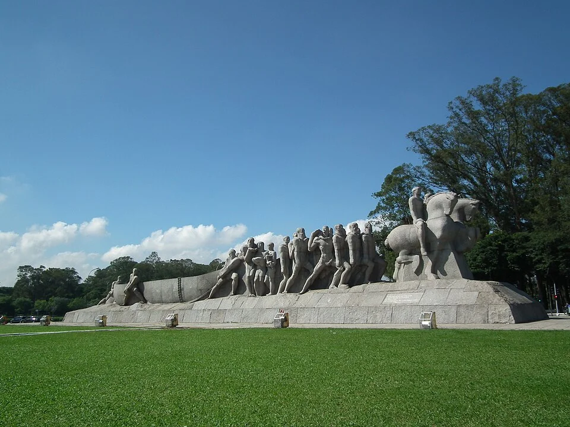
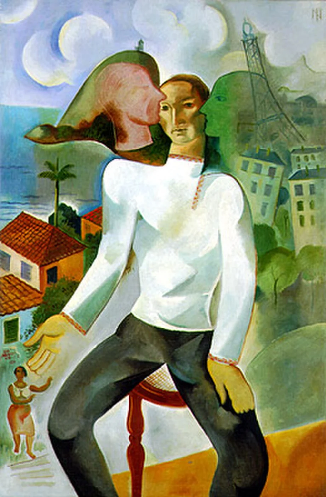
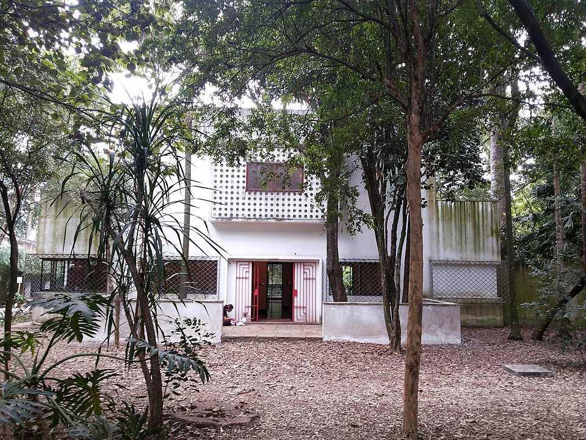
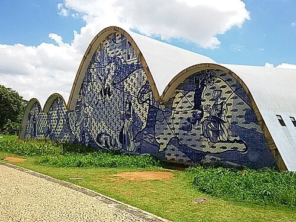

見どころ
舟を引く人々と馬上の人物が、長い列をつくります。1920年に始まった構想は植民地時代の内陸遠征を記念する市の事業となり、三十年以上を経て実現しました。
作品・制作の例7件を紹介しています。実作品画像4点、参照・関連画像0点。画像の収集は継続中です。
文学・美術・建築などにまたがる近代文化の動き
ブラジル・モダニズム
とても大きな足と、小さな頭。タルシラ・ド・アマラルの《アバポル》は、人体の比率を大胆に変えた絵です。ブラジルのモダニズムでは、外国の新しい芸術をただまねるのではなく、自分たちの社会や文化へ引き寄せて変えることが問われました。
実作品を見る

画像を表示できませんでした。下の出典ページで確認できます。
ヴィクトル・ブレシェレ / 1920年構想、1953年公開
舟を引く人々と馬上の人物が、長い列をつくります。1920年に始まった構想は植民地時代の内陸遠征を記念する市の事業となり、三十年以上を経て実現しました。
Flaminio Fantini / Wikimedia Commons / CC BY-SA 4.0（WebP変換）
出典で作品・資料を見る ↗CC BY-SA 4.0
ブラジル著作権法第48条。公共空間に恒久的に設置された作品の外観写真。
出典先の原画像を開く ↗作品の所蔵・権利情報 ↗画像の利用条件 ↗図版全体を保ち、表示用のWebP画像を作成。
実作品を見る

画像を表示できませんでした。下の出典ページで確認できます。
イスマエル・ネリ / 1927年
一つの胴体の上で、横向きの顔とこちらを見る顔が重なります。写実的な自画像から離れ、同じ人の複数の姿を同時に描いた作品です。
Ismael Nery / Wikimedia Commons / Public Domain Mark 1.0（WebP変換）
出典で作品・資料を見る ↗Public Domain Mark 1.0
作者は1934年没。原作・複製ともCommons個別ページのPD-Art表示。
出典先の原画像を開く ↗作品の所蔵・権利情報 ↗画像の利用条件 ↗図版全体を保ち、表示用のWebP画像を作成。
実作品を見る

画像を表示できませんでした。下の出典ページで確認できます。
グレゴリ・ワルシャフチク / 1927年設計、1928年竣工
庭の奥に、白い直方体を重ねた住宅が見えます。近代芸術週間で議論された新しい形が、1920年代のサンパウロで実際に暮らす家にも現れました。
Márcio Otoboni / Wikimedia Commons / CC BY-SA 4.0（WebP変換）
出典で作品・資料を見る ↗CC BY-SA 4.0
ブラジル著作権法第48条。公共空間に恒久的に設置された作品の外観写真。
出典先の原画像を開く ↗作品の所蔵・権利情報 ↗画像の利用条件 ↗図版全体を保ち、表示用のWebP画像を作成。
実作品を見る

画像を表示できませんでした。下の出典ページで確認できます。
オスカー・ニーマイヤー（建築）、カンディド・ポルチナーリ（タイル画） / 1940年代
大小の波を連ねたような屋根の端まで、青と白のタイル画が続きます。画家と建築家の仕事を一つの外観として体験できる、パンプーリャの代表的な建物です。
Geraldo Durães / Wikimedia Commons / CC BY-SA 4.0（WebP変換）
出典で作品・資料を見る ↗CC BY-SA 4.0
ブラジル著作権法第48条。公共空間に恒久的に設置された作品の外観写真。
出典先の原画像を開く ↗作品の所蔵・権利情報 ↗画像の利用条件 ↗図版全体を保ち、表示用のWebP画像を作成。
油彩画
巨大な足をもつ人物と植物が描かれています。他の文化を取り込み、自分たちのものへ変えるという議論と結びついた重要作です。
作品・資料の出典を見る ↗作品名（出典表記）：アバポル（Abaporu）
タルシラ・ド・アマラル / 1928年 / 油彩画
この作品一つで、すべての活動を代表するわけではありません。
油彩画
風景の形を単純化し、現実とは違う空間をつくります。人物の絵と比べ、風景でも比率や輪郭が変えられることを見ます。
作品・資料の出典を見る ↗作品名（出典表記）：月（A Lua／The Moon）
タルシラ・ド・アマラル / 1928年 / 油彩画
この作品一つで、すべての活動を代表するわけではありません。
キャンバスに油彩
身体の形を大胆に変えた絵です。新しい造形の試みと、人種や性別の描き方を、両方考えるために取り上げます。
作品・資料の出典を見る ↗作品名（出典表記）：黒人女性（A negra）
タルシラ・ド・アマラル / 1923年 / キャンバスに油彩
作品の歴史的題名を示しています。描かれた人を一つの人種や地域の代表像として扱いません。
花崗岩の群像・サンパウロ
舟を引く人々と馬上の人物が、長い列をつくります。1920年に始まった構想は植民地時代の内陸遠征を記念する市の事業となり、三十年以上を経て実現しました。
作品・資料の出典を見る ↗原題：Monumento às Bandeiras
ヴィクトル・ブレシェレ / 1920年構想、1953年公開 / 花崗岩の群像・サンパウロ
油彩・カンヴァス
一つの胴体の上で、横向きの顔とこちらを見る顔が重なります。写実的な自画像から離れ、同じ人の複数の姿を同時に描いた作品です。
作品・資料の出典を見る ↗原題：Auto-retrato
イスマエル・ネリ / 1927年 / 油彩・カンヴァス
住宅・サンパウロ
庭の奥に、白い直方体を重ねた住宅が見えます。近代芸術週間で議論された新しい形が、1920年代のサンパウロで実際に暮らす家にも現れました。
作品・資料の出典を見る ↗原題：Casa Modernista da Rua Santa Cruz
グレゴリ・ワルシャフチク / 1927年設計、1928年竣工 / 住宅・サンパウロ
教会建築・ベロオリゾンテ
大小の波を連ねたような屋根の端まで、青と白のタイル画が続きます。画家と建築家の仕事を一つの外観として体験できる、パンプーリャの代表的な建物です。
作品・資料の出典を見る ↗原題：Igreja de São Francisco de Assis, Pampulha
オスカー・ニーマイヤー（建築）、カンディド・ポルチナーリ（タイル画） / 1940年代 / 教会建築・ベロオリゾンテ
1922年のサンパウロの近代芸術週間は、重要な節目でした。ただし、ブラジルの近代芸術は、その一回の催しだけで始まり終わったわけではありません。ここでは、パリでも学んだタルシラの絵を通じて、外から学ぶことと、自分たちの表現をつくることの関係を見ます。
明るい色の作品でも、題材によって感じ方は異なります。南国らしい色という説明だけで終わらせません。
絵画だけでなく、詩や宣言文とも関わった動きです。ここでの「食べる」という比喩は、他の文化を取り込み変える考えを指します。
大きくした足、小さくした頭、単純にした植物など、実物と違う比率に注目します。違いに、画家の選択が表れます。
人物と風景の大きさ、水平線、画面の空きを比べます。地域の風景も、見たままの記録ではなく組み立てられています。
トロピカリズモにも、外の文化を取り込み変える発想とのつながりがあります。ただし1920年代と1960年代では、政治や大衆文化の環境が異なります。
「自分たちらしさ」を表すとき、誰の姿が選ばれるのでしょうか。黒人や先住民の表象（ひょうしょう。人や文化をどう描き示すか）には、描く側との力の違いも考える必要があります。
絵画とそのほかの作品を通じて、ブラジルで近代の表現がどのように形を変えたかをたどります。
作品・制作の例7件を紹介しています。実作品画像4点、参照・関連画像0点。画像の収集は継続中です。